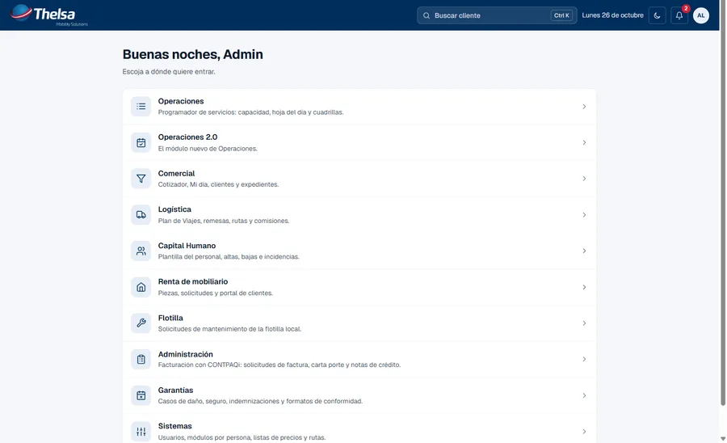
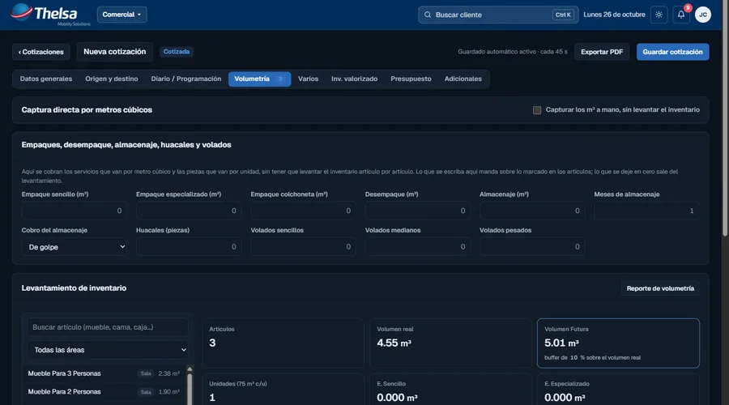
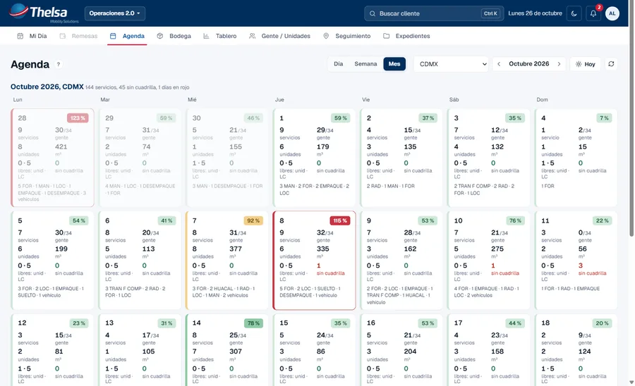
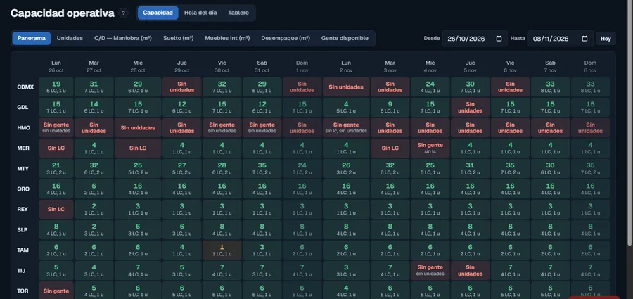
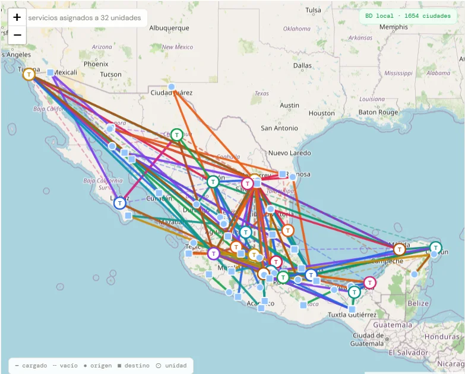
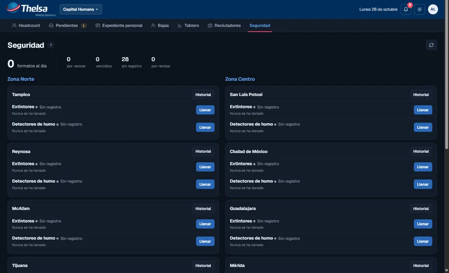
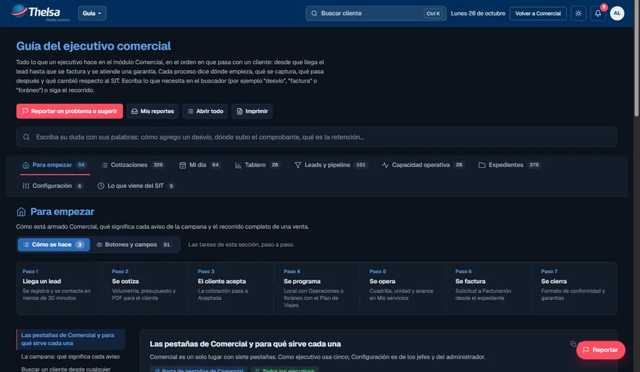
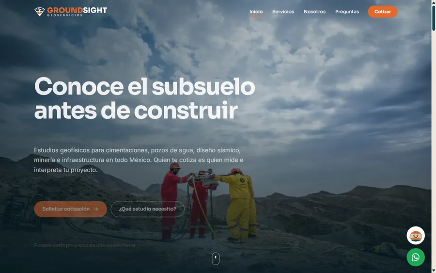
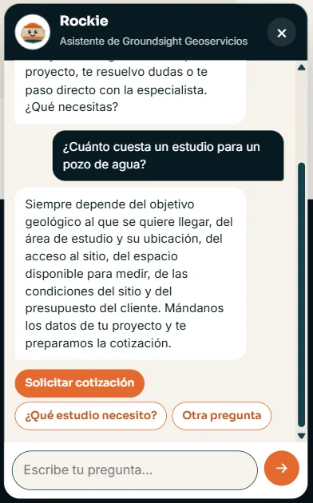
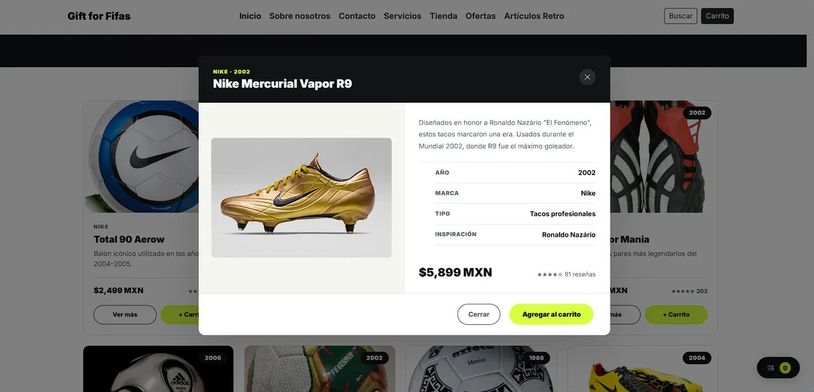

Responsable de Sistemas en Thelsa · Abierto a nuevos retos Full Stack
Jonas Castillo
Full Stack Developer que convierte procesos reales en sistemas
Construyo el software interno con el que una empresa trabaja todos los días: lo que antes vivía en hojas de Excel, correos y papel. Trabajo con PostgreSQL, JavaScript, Java y Python, y traigo más de siete años de experiencia coordinando operaciones críticas.
Monterrey, Nuevo León · Disponible para trabajo remoto y reubicación
PostgreSQLSupabaseJavaScript.NETJava · Spring BootPythonPlaywright
PostgreSQL · JavaScript · .NET · Java
Desarrollo técnico con criterio operativo
SOLUCIONES Y PROYECTOS
Software creado para resolver problemas reales
No presento solamente tecnologías: explico el problema, mi responsabilidad y el resultado de cada solución.
PROYECTO DESTACADO · 2026 · USO INTERNO
En producción
Sistema interno de operaciones para una empresa de mudanzas
Responsable de Sistemas · Thelsa Mobility Solutions · 13 sucursales en México
Sistema web que sustituye el sistema anterior, las hojas de Excel que viajaban por correo y los formatos en papel con los que operaba la empresa. Lo usan todos los días las áreas de operaciones, ventas, logística, personal, administración y atención de garantías.







Un solo acceso para todos los módulos: cada persona entra únicamente a lo que le corresponde según su rol.
Capturas reales tomadas en una copia de prueba del sistema; no muestran datos de clientes ni cifras del negocio.
Problema
La información de cada área vivía en herramientas distintas que no se hablaban entre sí. Programar un servicio, cotizarlo o saber cuánta gente y cuántas unidades quedaban libres un día dependía de capturas manuales y de la memoria de cada plaza.
Solución
Un sistema por módulos sobre una sola base de datos: programación de servicios contra la capacidad real, cotizaciones y expediente del cliente, plan de viajes y rutas, plantilla de personal e incidencias, facturación conectada al sistema contable, garantías y una guía de uso para cada pantalla.
Mi responsabilidad
Construí la mayoría de los módulos de negocio y la integración con el sistema contable; participé en operaciones y logística; y llevo la calidad y la puesta en producción: cada cambio se ensaya en una copia de la base real, con pruebas automatizadas de navegador, antes de publicarse.
Resultado
Las 13 sucursales operan sobre el sistema. La lógica de negocio vive en la base de datos, cada módulo tiene su propio espacio y los permisos se aplican por rol desde la base, no desde la pantalla.
13sucursales en operación
10+módulos de negocio
1sola base de datos
2026en producción desde
PostgreSQLPL/pgSQLSupabaseRLSpg_cronJavaScriptPWA.NET FrameworkPlaywrightCloudflare PagesGitHub Actions
El sistema es privado y de uso interno. La representación visual es conceptual y utiliza únicamente datos ficticios.
EL MÓDULO MÁS TRABAJADO · 2026 · DENTRO DEL SISTEMA DE THELSA
Cotizador comercial con motor de precios en la base de datos
Motor en PL/pgSQL · pantalla en JavaScript · homologado contra el sistema anterior
La pieza que más horas llevó: sustituye al cotizador del sistema anterior sin cambiar ni un centavo de lo que la empresa cobra. El ejecutivo levanta el inventario del cliente, el sistema calcula volumen, flete, maniobras, empaques, seguro y viáticos, y entrega el PDF, la liga para el cliente y el servicio listo para operaciones.
- Motor de precios en PL/pgSQL, homologado al centavo: reconstruí las reglas del sistema anterior (transporte por kilómetro con mínimos, maniobras por unidad, empaques por m³, pisos y elevadores, piano, vehículos y motos, desvíos, descuentos, IVA y retención) y las comparé contra decenas de folios reales hasta cuadrar centavo por centavo. La pantalla solo muestra lo que la base calcula.
- Volumetría y flete: catálogo de más de cien artículos con medidas ajustables (m³ = largo × ancho × alto, redondeado antes de multiplicar), marcas por artículo (empaque, desempaque, almacenaje, huacal, volado), unidades calculadas por volumen, y flete sobre una matriz de distancias de decenas de miles de pares de ciudades con cálculo automático por carretera para los pares que faltan.
- Listas de precios con herencia y viáticos automáticos: una lista base y una por empresa con convenio que solo guarda lo que difiere; los viáticos se calculan solos a partir de las cuadrillas que exige el volumen, la distancia y los días de trabajo, y se recalculan en vivo mientras la cotización sigue abierta.
- Alrededor del cotizador: PDF de cuatro páginas generado en el navegador, liga pública para que el cliente valorice su inventario (con póliza y pieza por pieza), catálogo de colonias con historial de traspaleo, sugerencias de colonia y calle, firma de documentos en línea, y el paso directo de Cotizada a Aceptada y a servicio programado en Operaciones.
PL/pgSQLPostgreSQLSupabaseJavaScriptMatriz de distanciasOpenStreetMapPDF en el navegadorExcel (ZIP quirúrgico)Playwright
La captura es una cotización nueva en una copia de prueba, sin cliente ni importes; las tarifas y reglas de precio no se muestran.
Cómo viaja una factura
- 01El sistema crea la tareaComercial pide la factura desde el expediente; Facturación la revisa y la base la encola con su folio.
- 02El puente la tomaEl servicio de Windows reclama la tarea, carga la empresa en CONTPAQi y busca el documento por referencia.
- 03Cliente, documento y movimientosAlta del cliente por RFC si hace falta, documento con sus renglones, forma de pago y observaciones por SDK.
- 04Validación y timbradoTotal comparado contra la solicitud; si cuadra, se emite el CFDI 4.0 (con complemento Carta Porte 3.1 cuando aplica).
- 05XML y PDF de regresoEl UUID, el XML y el PDF suben al almacenamiento privado y aparecen en el expediente; el ejecutivo recibe el aviso.
INTEGRACIÓN · 2026 · DENTRO DEL SISTEMA DE THELSA
Puente de facturación con CONTPAQi Comercial (SDK)
Diseño, desarrollo y pruebas · C# / .NET Framework 4.8 · SDK de CONTPAQi
El sistema deja cada factura y cada carta porte como una tarea en la base de datos; un servicio de Windows escrito en C# la toma y la ejecuta dentro de CONTPAQi Comercial con su SDK oficial, sin capturas manuales ni archivos de importación. Es la pieza que conecta la operación con la contabilidad y el timbrado ante el SAT.
- Servicio de Windows en .NET Framework 4.8 (x86), porque el SDK de CONTPAQi es de 32 bits. Entra a Supabase con un usuario técnico propio (nunca la llave de servicio), con latido cada minuto y cola de tareas con reintentos y espera exponencial.
- Idempotencia por referencia: si ya existe un documento con el folio de la solicitud, el puente continúa con ese; un reintento nunca crea dos facturas. El cliente se busca por RFC y, si no existe, se da de alta por SDK.
- Validación antes de timbrar: compara el total calculado por CONTPAQi contra el de la solicitud y se detiene si no cuadra. Emite CFDI 4.0 y cartas porte con el complemento Carta Porte 3.1 (incluido dentro de la factura o como documento de traslado).
- Resultado de vuelta al sistema: UUID, XML y PDF suben a un almacenamiento privado y quedan en el expediente del cliente; el ejecutivo recibe el aviso en el sistema. Los catálogos (clientes, productos, series) se leen con un usuario de SQL de solo lectura.
C#.NET Framework 4.8SDK CONTPAQi ComercialCFDI 4.0Carta Porte 3.1PostgreSQLSupabase StorageSQL Server (lectura)Servicio de Windows
Toda la integración se desarrolló y probó contra una empresa de prueba de CONTPAQi; aquí no se muestran datos fiscales.


SITIO PARA UN CLIENTE · 2026
Groundsight Geoservicios
Diseño · Contenido técnico · Desarrollo · Publicación
Sitio para la empresa de estudios geofísicos de Brenda Pamela, una geofísica que empieza por su cuenta. El reto técnico: que un cliente sin formación geofísica entienda cuál de los 18 estudios necesita y pida cotización, sin servidor, sin base de datos y con costo cero de operación.
- Rockie, asistente conversacional sin IA: conversa con botones y texto libre; normaliza el texto (NFD, sin acentos), detecta palabras clave por objetivo y responde con las preguntas frecuentes de la especialista. Lo que no sabe lo deriva a WhatsApp con el mensaje del cliente ya escrito; nunca inventa datos.
- Asistente "¿Qué estudio necesito?" y comparador de profundidades: a partir del objetivo y la profundidad propone el método, su alcance, los días de campo y el entregable; el comparador dibuja los 18 estudios en escala logarítmica, de centímetros a kilómetros.
- Generación estática desde un catálogo: un script en Node.js lee el mismo archivo de datos que usa el navegador y produce las 18 fichas, las tarjetas, el sitemap y el robots; cambiar un estudio es editar un objeto.
- Rendimiento y entrega: fotografías en WebP en cinco anchos con srcset (pipeline con sharp), animaciones que respetan prefers-reduced-motion, formulario sin servidor (FormSubmit por AJAX con honeypot), SEO con Open Graph y datos estructurados, y publicación en Cloudflare Pages.
HTML5CSS3JavaScriptNode.jssharpFormSubmitCloudflare PagesSEO
VueloXA-JQC
Llegada14:35
TipoEjecutivo
Aterrizaje$2,450
Plataforma$1,820
Servicios adicionales$980
Total estimado$5,250 MXN
HERRAMIENTA INTERNA · 2025
Calculadora de Servicios Aeroportuarios
Aplicación desarrollada para reemplazar cálculos manuales en Excel, centralizar reglas de cobro y automatizar los reportes de la administración de servicios aeroportuarios.
Construida en tres meses, continúa utilizándose sin mí y apoya el trabajo de dos personas por turno. El código y los datos no son públicos por confidencialidad.
PythonPandasMySQLREST APIExcel

PROYECTO COLABORATIVO · 2026
Syntax Logistics
Plataforma web para administrar cotizaciones, usuarios, envíos y seguimiento de paquetes. Participé en funcionalidades backend, operaciones CRUD, integración con MySQL, construcción de interfaz y validación de flujos funcionales.
Java 21Spring BootJPA / HibernateMySQLBootstrap
Ver repositorio

PROYECTO FRONTEND
Mundo Fifas
Sitio temático de fútbol con catálogo, artículos retro, modales interactivos y adaptación responsive desarrollada con HTML, CSS y JavaScript.
HTML5CSS3JavaScript
Ver repositorio
SOBRE MÍ
Desarrollo técnico con entendimiento del negocio
Soy desarrollador Full Stack. Hoy soy responsable de Sistemas en una empresa de mudanzas con 13 sucursales, donde construyo el sistema interno con el que operan, venden, planean rutas y administran a su gente.
Llegué al software desde la operación: durante más de siete años coordiné procesos críticos, equipos de trabajo, información financiera y KPIs en operaciones aeroportuarias. Por eso construyo pensando en la persona que usará el sistema a las seis de la mañana, y no doy por hecho que algo funciona hasta verlo en el navegador o en la base de datos.
Análisis de procesos
Identifico cuellos de botella, reglas de negocio y oportunidades de automatización, y las escribo en lenguaje llano para que quien decide pueda leerlas.
Lógica en la base, no en la pantalla
Las reglas viven en la base de datos y los permisos se aplican por rol desde ahí; cada cambio se ensaya en una copia de producción antes de publicarse.
Ejecución bajo presión
Estoy acostumbrado a priorizar, comunicar y resolver incidencias en operaciones donde un dato a destiempo cuesta.
EXPERIENCIA PROFESIONAL
De coordinar operaciones a construir los sistemas que las sostienen
Siete años en operaciones críticas y, desde 2026, el desarrollo de un sistema interno completo para una empresa con presencia nacional.
2026 — Actualidad
Responsable de Sistemas · Full Stack Developer
Thelsa Mobility Solutions
PostgreSQL · JavaScript · Integraciones · QAConstruyo y mantengo el sistema interno de la empresa: módulos de operaciones, comercial, logística, personal, administración y garantías sobre una sola base de datos. Integración con el sistema contable, pruebas automatizadas de navegador, publicación continua y soporte a las 13 sucursales.
Ene 2025 — Abr 2026
Administrador de Servicios Aeroportuarios
GAFSACOMM
Procesos · KPIs · AutomatizaciónAdministré cobros, facturación, ingresos y reportes de servicios aeroportuarios. Analicé procesos administrativos y financieros y desarrollé una herramienta en Python y SQL para automatizar cálculos y reportes operativos.
May 2024 — Ene 2025
Oficial de Operaciones
GAFSACOMM
Monitoreo · Seguridad · CoordinaciónMonitoreé operaciones aeroportuarias, elaboré reportes operativos, coordiné áreas de plataforma, mantenimiento, fauna y proveedores, y participé en capacitaciones de seguridad operacional.
Jul 2018 — Ene 2024
Encargado de Operaciones
Aerolíneas Ejecutivas
Liderazgo · Continuidad · ClientesCoordiné operaciones de vuelo, atención a clientes, combustible, rampa, mantenimiento y planes de vuelo. Supervisé hasta 23 colaboradores, gestioné KPIs y tomé decisiones en escenarios de alta presión.
STACK TÉCNICO
Tecnologías respaldadas por proyectos
Las habilidades se presentan por área, con el proyecto donde están probadas, sin porcentajes arbitrarios.
Bases de datos
PostgreSQLPL/pgSQLSupabaseRLS y permisos por rolpg_cron · pg_netPostgRESTMySQLSQL Server (lectura)Modelado relacional
Backend e integraciones
C# · .NET Framework 4.8SDK CONTPAQiCFDI 4.0 · Carta Porte 3.1Java 21Spring BootJPA / HibernateREST APIsNode.jsPythonColas de trabajo
Frontend
HTML5CSS3JavaScript ES2022PWA / Service WorkerAccesibilidadDiseño responsivoi18n ES/ENBootstrap
Datos y automatización
PythonPandasExcelGeneración de PDFConsumo de APIsRobots programados (cron)sharp
Calidad, entrega y metodología
PlaywrightGitGitHub ActionsCloudflare PagesVercelDockerPostmanJiraScrum
FORMACIÓN Y CERTIFICACIONES
Preparación técnica y conocimiento operativo
Java Full Stack Developer
AIFYC Institute Texas
Bootcamp Desarrollador Java Full Stack Jr.
Generation México
Análisis y seguimiento de KPIs operativos
Capacitación corporativa
Gestión de Operaciones Aeroportuarias
GAFSACOMM
Inglés — B2 Intermedio
Comunicación profesional intermedia
¿TRABAJAMOS JUNTOS?
Llevemos un proceso real a un sistema que funcione
Si tienes un proceso que hoy vive en Excel, en correos o en papel, o buscas un desarrollador Full Stack que entienda la operación además del código, escríbeme. Contesto el mismo día.
✓Disponible para trabajo remoto en México
✓Disponible para cambio de residencia
✓Full Stack · Backend · Automatización de procesos